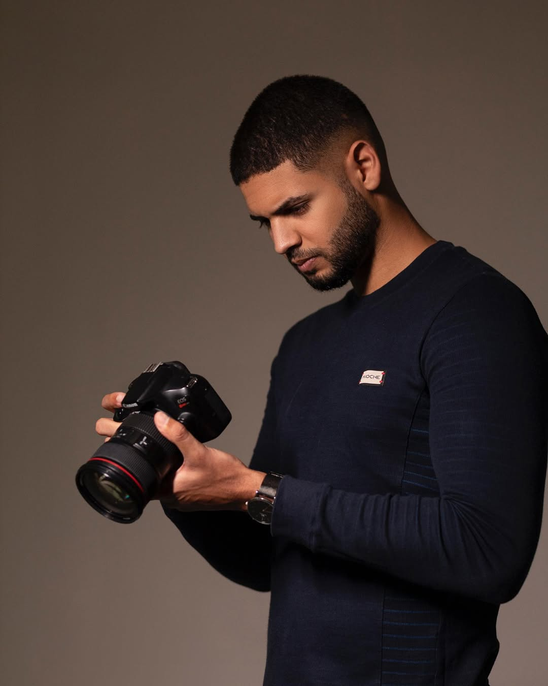

Olá, sou Klayver Edivaldo Silva, fotógrafo e filmmaker apaixonado por capturar momentos únicos e contar histórias visuais. Desde o início da minha carreira, busquei uma abordagem criativa e autêntica, com o objetivo de transmitir emoções e conexões por meio das imagens. Seja em um ensaio fotográfico, um vídeo publicitário ou um projeto mais autoral, minha missão é sempre entregar um trabalho de qualidade,que reflita minha visão e a visão do cliente. Vamos juntos criar algo inesquecível!
3
4